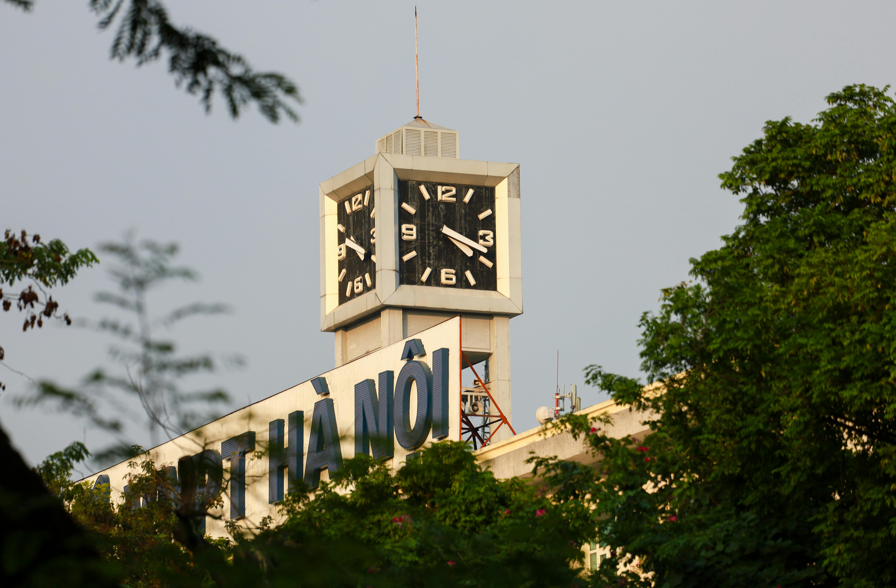
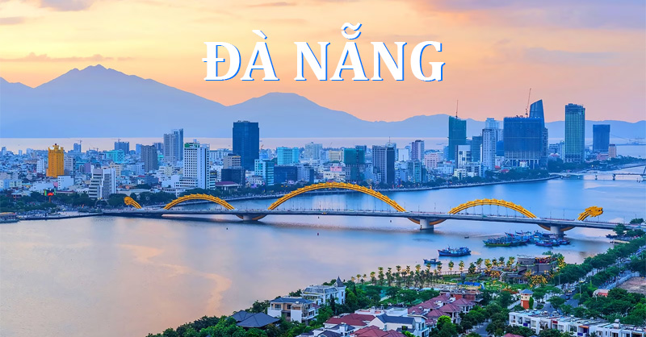

Du Lịch Miền Bắc
Miền Bắc nổi bật với vẻ đẹp cổ kính, thiên nhiên hùng vĩ và nền văn hóa lâu đời. Du khách có thể khám phá Hà Nội, Sa Pa, Hạ Long với những danh lam thắng cảnh nổi tiếng. Hà Nội là trung tâm văn hóa, chính trị với lịch sử hơn 1000 năm văn hiến. * Địa điểm tham quan tiêu biểu: * Khu di tích: Lăng Chủ tịch Hồ Chí Minh, Văn Miếu - Quốc Tử Giám, Hoàng thành Thăng Long. * Giải trí & Văn hóa: Hồ Hoàn Kiếm (Tháp Rùa, Đền Ngọc Sơn), Phố Cổ Hà Nội (36 phố phường), Nhà hát Lớn. * Trải nghiệm: Xem múa rối nước, tham quan bằng xe điện hoặc xích lô quanh Phố Cổ. * Ẩm thực đặc trưng: * Phở Hà Nội: Món ăn biểu tượng với nước dùng thanh trong từ xương bò và quế, hồi. * Bún chả: Thịt nướng than hoa ăn cùng nước chấm chua ngọt và đu đủ xanh. * Chả cá Lã Vọng: Cá lăng nướng nghệ trên chảo nóng cùng hành lá và thì là.

Du Lịch Miền Trung
Miền Trung gây ấn tượng với bãi biển dài, di sản văn hóa thế giới và ẩm thực đậm đà. Các điểm đến nổi bật gồm Huế, Đà Nẵng, Hội An, Nha Trang. Thành phố biển miền Trung, nằm giữa ba di sản văn hóa thế giới: Cố đô Huế, Phố cổ Hội An và Thánh địa Mỹ Sơn. * Địa điểm tham quan tiêu biểu: * Danh thắng: Ngũ Hành Sơn, Bán đảo Sơn Trà (Chùa Linh Ứng), Bà Nà Hills (Cầu Vàng). * Cầu biểu tượng: Cầu Rồng (phun lửa và nước vào cuối tuần), Cầu sông Hàn, Cầu Tình Yêu. * Bãi biển: Mỹ Khê (top bãi biển quyến rũ nhất hành tinh). * Ẩm thực đặc trưng: * Mì Quảng: Sợi mì dày, vàng, ăn với tôm, thịt lợn, trứng cút và nước dùng đậm đà, kèm bánh đa. * Bánh tráng cuốn thịt heo: Thịt heo hai đầu da luộc chín tới, cuốn cùng rau sống đa dạng và mắm nêm đặc sản. * Bún mắm nêm: Bún trộn mắm nêm, thịt quay, nem chả và mít non.

Du Lịch Miền Nam
Miền Nam mang vẻ đẹp sôi động, phóng khoáng với nhiều khu du lịch sinh thái và biển đảo. Nổi bật là TP.HCM, Phú Quốc, Cần Thơ và miền Tây sông nước. Đảo Phú Quốc là thành phố đảo đầu tiên của Việt Nam, nằm trong vịnh Thái Lan. * Địa điểm tham quan tiêu biểu: * Bắc đảo: VinWonders, Vinpearl Safari, Grand World (Thành phố không ngủ), Làng chài Rạch Vẹm. * Nam đảo: Cáp treo Hòn Thơm (cáp treo vượt biển dài nhất thế giới), Chùa Hộ Quốc, Bãi Sao, Nhà tù Phú Quốc. * Trải nghiệm: Tour 4 đảo (Hòn Móng Tay, Hòn Mây Rút, Hòn Gầm Ghì, Hòn Thơm), lặn ngắm san hô, câu mực đêm. * Ẩm thực đặc trưng: * Gỏi cá trích: Cá tươi phi lê trộn với hành tây, dừa nạo, ăn kèm rau rừng và nước chấm đậu phộng. * Bún quậy: Sợi bún tươi làm tại chỗ, ăn kèm chả tôm, chả cá, mực và nước chấm tự pha. * Hải sản: Ghẹ Hàm Ninh, nhum biển nướng mỡ hành, còi biên mai nướng muối ớt.